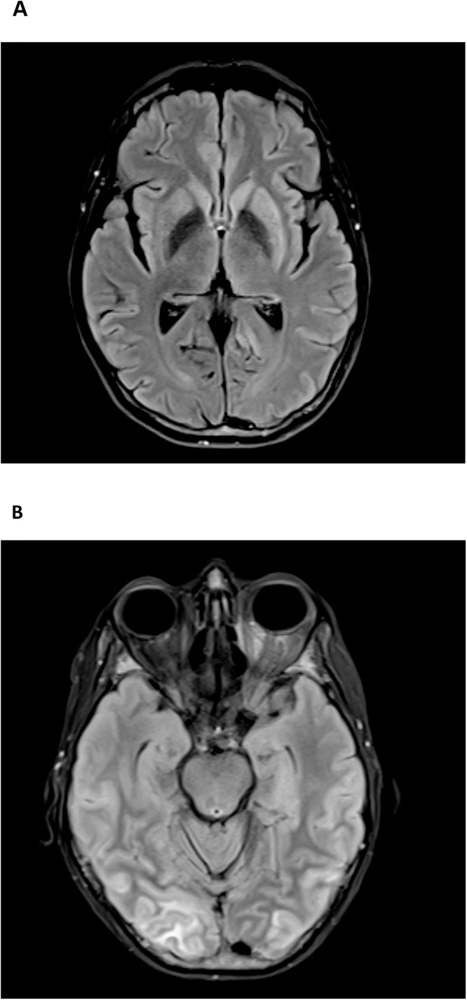
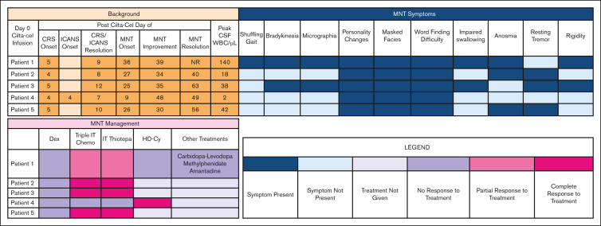
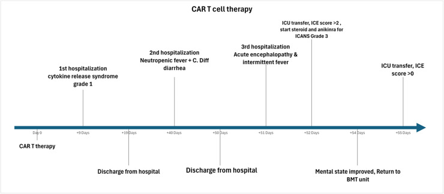

1440 — Parkinsonism muộn sau CAR-T nhắm BCMA (MNT) / Movement and neurocognitive treatment-emergent adverse events
Tags: pattern:parkinson pattern:ton-thuong-hat-nen pattern:benh-nao-lan-toa vung:nao vung:hat-nen score:CTCAE protocol:MRI-DWI protocol:DaT-SPECT protocol:choc-DNT
Mức chắc chắn (certainty): tổng hợp y văn (literature synthesis) — ghép loạt 5 ca có số liệu định lượng của một trung tâm (Kelly K và cs., Blood Adv 2025, PMC12281119, CC BY-NC-ND 4.0), báo cáo ca tử vong có MRI + giải phẫu bệnh (Khoudari H và cs., Leuk Res Rep 2026, PMC12991952, CC BY 4.0) với ca nguyên văn đầu tiên mô tả cơ chế (Van Oekelen O và cs., Nat Med 2021, PMC8678323). Tỉ lệ và mốc thời gian dưới đây là số của từng nghiên cứu, ghi rõ nguồn; chỗ chưa có dữ liệu thì ghi "chưa rõ — cần tra", không bịa.
Bài này trả lời 4 câu hỏi của buổi tái khám sau truyền CAR-T: (1) Bệnh nhân "chậm chạp, nói khó, mặt lạ" ở tuần 4–8 — ICANS muộn, tái phát u, hay MNT? (2) MRI bình thường có loại trừ MNT không? (3) DaT-SPECT và dịch não tủy đóng vai trò gì? (4) Tăng corticoid có ích không, và khi nào chuyển sang hóa trị nội tủy? Đây là phần MUỘN của cùng phổ độc thần kinh đã học ở 1430 – ICANS: ICANS là bệnh não cấp ngày 3–6; MNT là hội chứng vận động – nhận thức bán cấp, thường tuần 4–8, cơ chế đích-trên-mô-lành (on-target, off-tumor) chứ không phải bão cytokine.
1. Tổng quan bệnh học – cơ chế hình ảnh
1.1 Vì sao BCMA lại đánh vào hạch nền
- BCMA (B-cell maturation antigen) là đích của cilta-cel/ide-cel. Ngoài tương bào ác tính, BCMA biểu hiện trên nơ-ron và tế bào hình sao ở hạch nền người; dữ liệu phiên mã công khai xác nhận RNA BCMA có trong nhân đuôi (caudate) của não người bình thường (Van Oekelen 2021).
- Ca giải phẫu bệnh đầu tiên: CAR-T tồn tại trong máu và dịch não tủy, thâm nhiễm lymphô bào ở hạch nền, và BCMA dương tính trên nơ-ron/tế bào hình sao đúng vùng thâm nhiễm → đây là độc tính đích-trên-mô-lành, không phải nhiễm trùng cơ hội.
- Vì sao hạch nền là vùng tổn thương: mật độ mao mạch cao, hàng rào máu não tương đối "lỏng" ở thể vân, và tế bào CAR-T xuyên qua hàng rào máu–dịch não tủy rồi di chuyển theo khoang dịch quanh mạch (glymphatic) — dịch não tủy của bệnh nhân MNT có tới 73% tế bào T là CAR-T (phân tích 16 ca trong registry, Kelly 2025 dẫn lại).
1.2 Giải thích TẠI SAO hình ảnh như vậy (bắt buộc theo Argon)
- T2/FLAIR tăng tín hiệu ở nhân đuôi – thể vân: thâm nhiễm lymphô bào + phù quanh mạch làm tăng nước tự do ngoại bào → kéo dài T2 (và FLAIR vì FLAIR chỉ khác T2 ở việc xóa tín hiệu dịch não tủy tự do, còn nước trong mô vẫn sáng). Đây là phù nội mô/mô kẽ, không phải nhồi máu.
- KHÔNG hạn chế khuếch tán: nước còn ở khoảng ngoại bào nên ADC không tụt — khác nhồi máu cấp (nước chuyển nội bào → DWI sáng, ADC tối). Vì thế DWI âm không loại trừ và DWI dương theo lãnh thổ mạch mới là nhồi máu.
- Thường KHÔNG ngấm thuốc: tổn thương là thâm nhiễm tế bào quanh mạch, rò rỉ hàng rào máu não mức thấp, không đủ gadolinium thoát ra để thấy trên T1 sau tiêm; trường hợp tử vong có ngấm màng não phản ứng (pachymeningitis) — tức tổn thương lan tới màng não.
- Vì sao MRI có thể hoàn toàn bình thường: mức tăng nước chỉ vài phần trăm, dưới ngưỡng tương phản của ảnh, trong khi tổn thương mô học (thoi hóa hải mã, tăng sinh vi bào đệm, thâm nhiễm lymphô bào) chỉ thấy trên tiêu bản — 4/5 ca trong loạt của Kelly có MRI bình thường.
- Vì sao DaT-SPECT bất thường dù MRI bình thường: ¹²³I-ioflupane gắn chất vận chuyển dopamine (DAT) tiền synapse ở thể vân; mất đầu tận cùng thần kinh dopaminergic không tạo tín hiệu trên MRI nhưng làm giảm gắn thuốc ở thể vân (putamen trước, theo trình tự thoái hóa nigrostriatal). Đây là thay đổi chức năng, không phải tổn thương cấu trúc.
1.3 Ngưỡng định lượng nằm lòng
| Đại lượng | Con số | Nguồn |
|---|---|---|
| Parkinsonism sau cilta-cel trong CARTITUDE-1 | 6%; chỉ 1 bệnh nhân hồi phục hoàn toàn | Kelly 2025 (dẫn CARTITUDE-1) |
| Parkinsonism trong CARTITUDE-4 (bệnh nhân được điều trị sớm hơn) | 1% | Kelly 2025 (dẫn CARTITUDE-4) |
| Parkinsonism với cilta-cel thương mại | 2%, chỉ 1 ca cải thiện | Kelly 2025 |
| Tỉ lệ tại một trung tâm (60 bệnh nhân liên tiếp) | 8% (5/60) | Kelly 2025 |
| Thời điểm khởi phát — CARTITUDE-1 | trung vị 60 ngày | Kelly 2025 |
| Thời điểm khởi phát — loạt 5 ca | trung vị 26 ngày (khoảng 9–36) | Kelly 2025 |
| Thời gian kéo dài — CARTITUDE-1 | trung vị 265 ngày | Kelly 2025 |
| Dịch não tủy — tế bào | trung vị 42/µL (khoảng 2–140); 90% là lymphô bào (89–95%), gần như toàn bộ là tế bào T | Kelly 2025 |
| Dịch não tủy — tỉ lệ CAR-T trong tế bào T | 73% | Registry 16 ca, Kelly 2025 dẫn |
| Đỉnh ALC sau truyền (nhóm MNT) | 2,93 × 10⁹/L (1,75–3,74) so với 1,45 × 10⁹/L ở nhóm không MNT (P = 0,2 — chưa đủ kết luận) | Kelly 2025 |
| Đỉnh ALC trong registry 16 ca | trung vị 9,5 × 10⁹/L | Registry, Kelly 2025 dẫn |
| Thời gian tới cải thiện đầu tiên (sau hóa trị nội tủy) | trung vị 7 ngày (3–39) | Kelly 2025 |
| Thời gian hồi phục hoàn toàn | trung vị 34 ngày (13–40) | Kelly 2025 |
| Tỉ lệ hồi phục hoàn toàn với hóa trị nội tủy | 3/5 (60%) | Kelly 2025 |
Yếu tố nguy cơ (CARTITUDE-1, Kelly 2025 dẫn): gánh nặng u cao, CRS độ ≥ 2 hoặc ICANS bất kỳ độ, và khuếch đại CAR-T mạnh. Trong loạt 5 ca của Kelly, không thấy gánh nặng u cao hay liều CAR-T cao là đặc điểm chung — tức không có bộ tiêu chuẩn tiên đoán đủ mạnh, phải theo dõi lâm sàng.
2. Mẫu hình + chẩn đoán phân biệt theo vị trí (gamut)
- Hạch nền có tăng tín hiệu T2/FLAIR (một hoặc hai bên): MNT do BCMA · nhồi máu hạch nền (theo lãnh thổ, DWI dương) · viêm não (HSV, enterovirus, tự miễn) · ngộ độc CO/methanol · bệnh Wilson · thiếu máu – thiếu oxy · CJD (thể hạch nền) · tái phát đa u tủy trong nhu mô não (hiếm).
- Hạch nền + thân não, đối xứng: MNT thể nặng · PRES · bệnh não Wernicke · hủy myelin thẩm thấu · ngộ độc thuốc (metronidazol) · bệnh não do fludarabine (hóa trị chuẩn bị).
- Chất trắng lan tỏa: ICANS muộn (1430) · PRES · độc fludarabine · bệnh mạch máu nhỏ mạn (Fazekas).
- Màng não: pachymeningitis phản ứng trong MNT nặng (ca tử vong) · di căn màng não do đa u tủy · viêm màng não nhiễm trùng · ngấm màng sau hóa trị nội tủy.
- MRI bình thường (nhóm ĐÔNG NHẤT): MNT · bệnh Parkinson nguyên phát · parkinson do thuốc (metoclopramid, thuốc chống loạn thần, thuốc chống nôn) · não úng thủy áp lực bình thường (NPH) · suy giáp · thiếu vitamin B12 · trầm cảm/triệu chứng tâm thần.
- Mnemonic "PARKINSON SAU CAR-T" — 6 nhóm phải loại trừ trước khi gọi MNT: PRES · Acute stroke (nhồi máu) · Recurrence u trong thần kinh trung ương · Kali/điện giải – Nội tiết (giáp, B12) · Infection (viêm màng não, viêm não) · Sedative/drug-induced.
3. Bảng so sánh phân biệt (ma trận đối chiếu)
| Thực thể (entity) | Hình ảnh điển hình | Chốt vào (rule-in) | Chốt loại (rule-out) | Gợi ý xác nhận |
|---|---|---|---|---|
| MNT do BCMA (parkinsonism muộn) | Thường bình thường (4/5); nếu có: T2/FLAIR tăng tín hiệu nhân đuôi – thể vân, có thể bất đối xứng, lan thân não; DaT giảm gắn thuốc ở thể vân | Khởi phát tuần 4–8 sau CAR-T BCMA + chậm chạp/cứng đờ/mất biểu cảm + khó tìm từ, mất khứu giác; dịch não tủy có tăng tế bào lymphô T | MRI bình thường không loại trừ; không sốt, không ổ nhiễm, không tế bào ác tính trong dịch não tủy | Chấm vận động lâm sàng; DaT-SPECT; tế bào + flow cytometry dịch não tủy; đáp ứng hóa trị nội tủy |
| ICANS muộn / ICANS kéo dài | FLAIR chất trắng lan tỏa, phù, ngấm màng mềm thoáng qua; hiếm khi khu trú hạch nền | Cửa sổ ngày 3–6 (điển hình) + ICE giảm + thất ngôn/viết sai + bão cytokine trước đó | Khởi phát sau ngày 30 không còn là ICANS điển hình; MNT không có đỉnh cytokine cấp | ASTCT/ICE, EEG; đáp ứng corticoid (ICANS đáp ứng, MNT không) |
| Tái phát/xâm lấn đa u tủy trong thần kinh trung ương | Ngấm màng nội tủy/màng mềm dày, nốt, tổn thương nhu mô ngấm thuốc | Tế bào ác tính trong dịch não tủy + tổn thương ngấm thuốc MỚI + tăng chuỗi nhẹ/điện di | Không ngấm thuốc, tế bào học âm → không phải xâm lấn; nhưng phải lặp dịch não tủy | MRI toàn trục có cản quang; tế bào học + flow; PET/CT |
| Bệnh Parkinson nguyên phát | MRI bình thường; DaT giảm gắn thuốc bất đối xứng, thể vân sau trước | Run khi nghỉ bất đối xứng + đáp ứng levodopa + tiến triển chậm nhiều năm | Khởi phát cấp sau truyền CAR-T, tiến triển trong vài tuần → không phải Parkinson nguyên phát | Thử levodopa không dùng để chẩn đoán; theo dõi dọc |
| Parkinson do thuốc | MRI bình thường; DaT BÌNH THƯỜNG | Bắt đầu sau khi thêm metoclopramid/kháng thần kinh/chống nôn; đối xứng; giảm khi ngừng thuốc | DaT bất thường → không phải do thuốc; thuốc không giải thích được tiến triển | Rà đơn thuốc; ngừng thuốc nghi ngờ 4–8 tuần |
| PRES | Phù vasogenic chẩm–đỉnh, đối xứng, FLAIR sáng, ADC cao | Tăng huyết áp + ức chế miễn dịch + nhìn mờ/co giật | Tổn thương hạch nền đơn thuần không có ưu thế chẩm–đỉnh → không phải PRES | Đo huyết áp; MRI lặp sau 1–2 tuần (PRES thoái lui) |
| NPH | Giãn não thất không tương xứng teo vỏ, DESH, góc callosal nhỏ | Tam chứng: rối loạn dáng đi "từ tính" + tiểu không kiểm soát + sa sút | Không giãn não thất → loại NPH; MNT có thể có giãn nhẹ do teo | Thể tích não thất; nghiệm pháp dẫn lưu dịch não tủy |
| Nhiễm trùng thần kinh trung ương | Ngấm màng não, áp-xe viền ngấm, ổ dịch | Sốt + cứng gáy + dịch não tủy: tế bào tăng/glucose giảm/protein cao + PCR/cấy dương | Không sốt, glucose bình thường, PCR âm không loại trừ hoàn toàn (đã dùng kháng sinh) | Chọc dò trước khi tăng corticoid; PCR virus; cấy |

(A) T2-FLAIR: tăng tín hiệu nhân đuôi và thể vân trái > phải, không ngấm thuốc. (B) Cùng bệnh nhân: phù vỏ–dưới vỏ vùng chẩm kiểu PRES — hai mẫu hình có thể đồng thời, nên không được dừng ở chẩn đoán PRES. Nguồn: Khoudari H và cs., Leuk Res Rep 2026, PMC12991952, Fig 2 — CC BY 4.0.4. Protocol chụp + hệ phân độ/điểm chuẩn hóa
4.1 Protocol hình ảnh và xét nghiệm khi nghi MNT
| Bước | Nội dung | Ngưỡng / thời điểm |
|---|---|---|
| MRI sọ | T2-FLAIR + DWI/ADC + SWI + T1 trước/sau tiêm, lát ≤ 3 mm qua hạch nền; thêm chuỗi toàn trục nếu nghi di căn màng não | Ngay khi có triệu chứng vận động/nhận thức mới; lặp lại sau 4–8 tuần vì tổn thương có thể xuất hiện muộn |
| DaT-SPECT (¹²³I-ioflupane) | Đánh giá gắn thuốc ở thể vân, so sánh phải/trái và đuôi/thể vân trước–sau | Khi parkinson là triệu chứng trội; DaT bất thường ủng hộ mất đầu tận cùng dopaminergic, nhưng không phân biệt được MNT với Parkinson nguyên phát |
| Chọc dò dịch não tủy | Tế bào + công thức, protein, glucose, flow cytometry tìm tế bào CAR-T, tế bào học, PCR (HSV, CMV, EBV, JCV), cấy | Khi an toàn (không có khối/nguy cơ thoát vị); làm TRƯỚC khi tăng corticoid nếu có thể |
| Xét nghiệm loại trừ | TSH, vitamin B12, natri, canxi, chức năng gan/thận, amoniac, nồng độ thuốc an thần/chống nôn | Ngay từ đầu — rẻ và loại trừ được nguyên nhân chữa được |
| Đánh giá vận động | Thang MDS-UPDRS phần III hoặc khám định tính (chậm chạp, cứng đờ, dáng đi, chữ viết) mỗi lần khám | Mỗi 1–2 tuần trong 3 tháng đầu sau truyền CAR-T BCMA |
4.2 Phân độ (chưa có thang riêng cho MNT)
- Chưa có thang độ riêng cho MNT (chưa rõ — cần tra khi có đồng thuận mới). Thực hành hiện dùng CTCAE v5 cho "parkinsonism": độ 1 = nhẹ, không cần điều trị; độ 2 = vừa, hạn chế hoạt động công cụ; độ 3 = nặng, hạn chế tự chăm sóc; độ 4 = đe dọa tính mạng.
- Nếu đồng thời có rối loạn tri giác/thất ngôn → chấm thêm ASTCT ICANS (1430) và điều trị theo mức nặng nhất, nhưng ghi rõ hai hội chứng vì đáp ứng điều trị khác nhau.
flowchart TD
A[Nghi MNT: cham chap, cung do, mat bieu cam, kho tim tu sau CAR-T BCMA] --> B[MRI nao co FLAIR + DWI/ADC + SWI + T1 sau tiem]
A --> C[Xet nghiem: TSH, B12, dien giai, ra don thuoc]
B --> D{MRI bat thuong?}
D -->|Co ton thuong ngam thuoc moi| E[Loai tru tai phat u trong TKTW: chop DNT te bao hoc + flow]
D -->|Ton thuong hach nen khong ngam thuoc| F[Phu hop MNT hoac viem nao: choc do DNT + PCR]
D -->|Binh thuong| G[Khong loai tru MNT: van choc do DNT + DaT-SPECT]
C --> F
G --> F
E --> H{DNT co tang te bao lympho T?}
F --> H
H -->|Co| I[Hoa tri noi tuy: triple IT methotrexate 12 mg + cytarabine 50 mg + hydrocortison 50 mg]
I --> J{Con trieu chung hoac con tang te bao?}
J -->|Co| K[IT thiotepa 10 mg + hydrocortison 50 mg]
J -->|Khong| L[Theo doi dong: danh gia van dong moi 1-2 tuan]
H -->|Khong| M[Xem lai chan doan phan biet: Parkinson nguyen phat, thuoc, NPH, nhiem trung]
K --> N{Van khong dap ung?}
N -->|Co| O[Cyclophosphamid lieu cao 1 g/m2 - canh bao mat CAR-T som va tai phat]
N -->|Khong| L
4.3 Điều trị: cái gì hiệu quả, cái gì KHÔNG
| Can thiệp | Kết quả đã báo cáo | Ghi chú |
|---|---|---|
| Corticoid toàn thân (dexamethasone 20–40 mg/ngày) | Không hiệu quả ở 5/5 ca của Kelly; registry: cải thiện ít nhất một phần 7/10 | Corticoid không phải trục điều trị của MNT (khác ICANS); tăng liều kéo dài chỉ thêm nguy cơ nhiễm trùng |
| Hóa trị nội tủy "triple IT" (methotrexate 12 mg + cytarabine 50 mg + hydrocortison 50 mg) | 3/5 hồi phục hoàn toàn; 4/4 ca có tăng tế bào dịch não tủy cải thiện ít nhất một phần | Hiệu quả gắn với tăng tế bào lymphô trong dịch não tủy; an toàn trong loạt này |
| IT thiotepa 10 mg + hydrocortison 50 mg | Dùng khi cải thiện một phần hoặc còn tăng tế bào sau triple IT | Lựa chọn của nhóm Chicago; chưa có thử nghiệm đối chứng |
| Cyclophosphamid liều cao 1 g/m² | Cải thiện nhanh ở 1/2 ca kháng hóa trị nội tủy; registry 3/5 | Nguy cơ: diệt CAR-T sớm → tái phát bệnh sớm + giảm tế bào máu nặng |
| Levodopa/carbidopa, amantadine, methylphenidat | Không hiệu quả (1 ca dùng phối hợp, không cải thiện) | Không dùng để chẩn đoán; không duy trì dài hạn như bệnh Parkinson |
| IVIG | Không cải thiện triệu chứng ở 3 ca dùng vì giảm IgG thứ phát; registry 2/4 cải thiện một phần | Chỉ định vì giảm IgG, không phải vì MNT — hạ IgG kéo dài là mặt nhiễm trùng muộn của cùng bệnh nhân, không phải điều trị MNT |

Bảng 5 ca: khởi phát MNT ngày 9–36, tế bào dịch não tủy 2–140/µL, và đáp ứng với triple IT / IT thiotepa / HD-Cy. Cột "Peak CSF WBC" là mốc quyết định chọn hóa trị nội tủy. Nguồn: Kelly K và cs., Blood Adv 2025, PMC12281119, Fig 1 — CC BY-NC-ND 4.0 (nguyên bản, không chỉnh sửa).5. Biến thể bình thường và cạm bẫy
- MRI bình thường là quy luật, không phải ngoại lệ: 4/5 ca của Kelly có MRI bình thường; MRI bình thường KHÔNG loại trừ MNT và không được trì hoãn đánh giá dịch não tủy.
- DaT bất thường không phải "dấu đặc hiệu của MNT": Parkinson nguyên phát, MSA, PSP, DLB đều giảm gắn thuốc; chỉ DaT BÌNH THƯỜNG mới có giá trị loại nguyên nhân thoái hóa (gợi ý parkinson do thuốc).
- Cạm bẫy thời gian: khởi phát sau ngày 30 thì không còn là ICANS điển hình; gọi "ICANS muộn" rồi tăng corticoid là sai hướng và che nhiễm trùng — trong khi corticoid không có hiệu quả với MNT.
- Cạm bẫy "đã có PRES thì thôi": ca tử vong có đồng thời phù kiểu PRES và tổn thương hạch nền; sự hiện diện của PRES không giải thích được cứng đờ + chậm chạp tiến triển.
- Cạm bẫy "chỉ là trầm cảm" ở người trẻ: mất biểu cảm, mất khứu giác, khó tìm từ xuất hiện theo cụm sau CAR-T là hội chứng thần kinh, không phải rối loạn khí sắc; bỏ sót dẫn tới không chọc dò, không điều trị trong giai đoạn hồi phục được.
- Bẫy mặt cắt: tổn thương hạch nền bất đối xứng trên một lát cắt dễ bị đọc là nhồi máu nhân béo; kiểm tra DWI/ADC (nhồi máu: hạn chế khuếch tán theo lãnh thổ) và so sánh hai bên trên nhiều lát.
- Bẫy tái phát u: đa u tủy có thể xâm lấn thần kinh trung ương và bắt chước MNT; mọi tổn thương ngấm thuốc mới hoặc tế bào bất thường trong dịch não tủy phải loại trừ tái phát trước khi quy cho độc tính.
- Đừng quên nguyên nhân chữa được: suy giáp, thiếu B12, hạ natri, ngộ độc thuốc — xét nghiệm rẻ, làm trước khi kết luận "MNT kháng trị".
- Cảnh báo khi dùng HD-Cy: có thể diệt CAR-T toàn thân → tái phát sớm; chỉ dùng như cứu cánh khi hóa trị nội tủy thất bại.
6. Tự lượng giá — Blind Quiz
Ca 1 — Nữ 61 tuổi, đa u tủy 15 năm, ngày 50 sau truyền cilta-cel: lú lẫn rồi cứng đờ
- Bối cảnh: sau đợt CRS độ 1 thoáng qua, bệnh nhân xuất hiện lú lẫn tiến triển, cứng đờ, giảm biểu cảm ở ngày 50.
- Câu hỏi: (a) Mô tả bất thường trên (A) và (B)? (b) Tổn thương (A) có hạn chế khuếch tán không, và vì sao? (c) Ba chẩn đoán phân biệt?
Bấm để hiện đáp án (findings + chẩn đoán)
- Dấu hiệu: (A) tăng tín hiệu T2-FLAIR ở nhân đuôi và thể vân, trái > phải, không ngấm thuốc; (B) phù vỏ–dưới vỏ vùng chẩm hai bên kiểu PRES.
- Chẩn đoán: độc thần kinh muộn sau CAR-T BCMA, nằm trong phổ MNT (bệnh cảnh trùng lặp với ICANS độ 4 muộn) — bệnh nhân không đáp ứng điều trị miễn dịch phối hợp và tử vong ngày 93; giải phẫu bệnh: xơ hóa hải mã hai bên, tăng sinh vi bào đệm lan tỏa, thâm nhiễm vi bào đệm.
- Vì sao không hạn chế khuếch tán: phù/thâm nhiễm lymphô bào làm tăng nước ngoại bào → T2/FLAIR sáng nhưng ADC không tụt (khác nhồi máu cấp).
- Phân biệt: nhồi máu hạch nền (DWI dương theo lãnh thổ), viêm não/nhiễm trùng (sốt, PCR dịch não tủy), tái phát đa u tủy trong thần kinh trung ương (ngấm thuốc, tế bào ác tính), và PRES đơn thuần (không giải thích cứng đờ tiến triển).
- Nguồn ảnh: Khoudari H và cs., Leuk Res Rep 2026, PMC12991952, Fig 2 — CC BY 4.0.
Ca 2 — Cùng bệnh nhân: dòng thời gian 65 ngày sau truyền

- Bối cảnh: bệnh nhân đa u tủy, theo dõi ngoại trú sau cilta-cel.
- Câu hỏi: (a) Biến cố thần kinh nặng xuất hiện ở ngày thứ mấy? (b) Đợt CRS ban đầu nặng hay nhẹ? (c) Vì sao CRS nhẹ không loại trừ độc thần kinh muộn?
Bấm để hiện đáp án (findings + chẩn đoán)
- Dấu hiệu: CRS độ 1 ở ngày 9, xuất viện; nhập viện lần 2 ngày 40 vì giảm bạch cầu trung tính + tiêu chảy C. difficile; nhập viện lần 3 ngày 51 với bệnh não cấp + sốt từng cơn; chuyển ICU ngày 52 (ICE > 2, bắt đầu corticoid + anakinra); ngày 65 vẫn ICU.
- Chẩn đoán: độc thần kinh muộn (MNT/ICANS muộn) khởi phát sau ngày 50, tức ngoài cửa sổ ICANS điển hình.
- Vì sao CRS nhẹ không loại trừ: cơ chế MNT là đích-trên-mô-lành trên nơ-ron/tế bào hình sao hạch nền, không phụ thuộc cường độ bão cytokine; đúng ra CRS độ ≥ 2 và ICANS bất kỳ độ là yếu tố nguy cơ nhưng không phải điều kiện bắt buộc.
- Nguồn ảnh: Khoudari H và cs., Leuk Res Rep 2026, PMC12991952, Fig 1 — CC BY 4.0.
Ca 3 — Năm bệnh nhân, cùng một câu hỏi: dựa vào đâu để chọn điều trị?
- Bối cảnh: loạt 5 bệnh nhân cilta-cel có parkinsonism tại một trung tâm.
- Câu hỏi: (a) Triệu chứng nào xuất hiện ở 100% bệnh nhân? (b) Xét nghiệm nào phân tầng được đáp ứng điều trị? (c) Bệnh nhân không cải thiện khác biệt ở điểm nào?
Bấm để hiện đáp án (findings + chẩn đoán)
- Dấu hiệu: thay đổi nhân cách (mất biểu cảm, mất hứng thú, giảm ý chí), khó tìm từ, mất biểu cảm mặt ở 5/5 (100%); kèm dáng đi lê, chậm chạp, chữ nhỏ, mất khứu giác, run khi nghỉ, cứng đờ.
- Phân tầng: tế bào trong dịch não tủy — 4/4 ca có tăng tế bào lymphô đều cải thiện ít nhất một phần với hóa trị nội tủy; ca duy nhất không cải thiện là ca KHÔNG có tăng tế bào.
- Điều trị: corticoid không hiệu quả ở tất cả; triple IT giúp 3/5 hồi phục hoàn toàn; IT thiotepa dùng khi còn triệu chứng; HD-Cy cho ca kháng trị (có cải thiện nhanh nhưng nguy cơ tái phát do mất CAR-T).
- Nguồn ảnh: Kelly K và cs., Blood Adv 2025, PMC12281119, Fig 1 — CC BY-NC-ND 4.0 (nguyên bản).
Bài liên quan chéo
- 1430 – ICANS: độc tính thần kinh CẤP sau CAR-T: cửa sổ ngày 3–6, ICE/ASTCT, corticoid là trục.
- 1423 – Độc tính methotrexate nội tủy: tổn thương chất trắng do thuốc, không có bão cytokine.
- 211 – Đột quỵ não: hạn chế khuếch tán theo lãnh thổ mạch — chốt loại nhồi máu hạch nền.
- 1659 – Di căn màng não – nội tủy: ngấm màng nội tủy muộn sau CAR-T.
- 206 – PML và IRIS: bệnh não chất trắng ở người suy giảm miễn dịch.
Ảnh
- 3 ảnh: 2 ảnh từ bài CC BY 4.0 (Khoudari 2026) và 1 ảnh từ bài CC BY-NC-ND 4.0 (Kelly 2025) — nguyên bản, không crop, không ghép; nguồn và giấy phép từng file ở
images/CREDITS.md. - Không dựng ảnh ghép đối chiếu cho bài này vì bài CC BY-NC-ND cấm tác phẩm phái sinh.
Disclaimer y tế: Bài học chỉ phục vụ đào tạo và tra cứu; không dùng để chẩn đoán hoặc điều trị độc lập khi chưa có người hướng dẫn và chưa đối chiếu bệnh cảnh cụ thể.